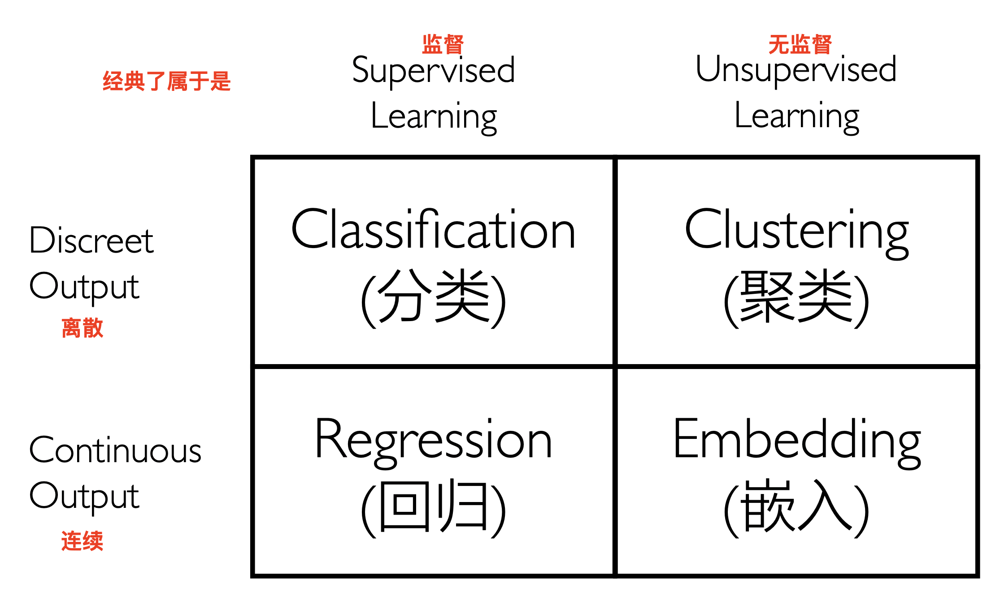
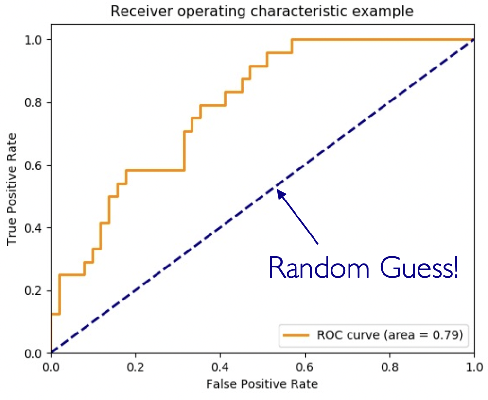
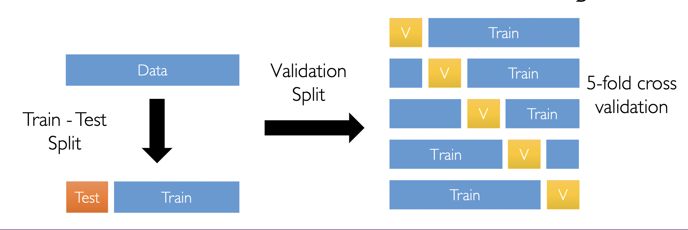
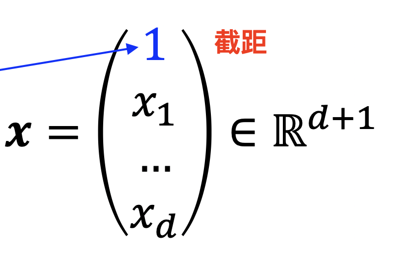

人工智能导论——Learning1
作者：Kirino 联系方式：he-jx19@mails.tsinghua.edu.cn
ML框架
ML本质
- 定义输入的特征向量\(\vec{x}\in R^d\)
- 定义输出\(y\)
- 客观存在一个\(\vec{x}\mapsto y\)的函数\(f\)作为ground truth
- 定义一个从\(\vec{x}\mapsto y\)的函数集合\(\mathcal{H}\)作为假设空间，通常满足正则性
- 连续性
- 光滑性
- 简单性
- 定义一个搜索算法\(\mathcal{A}\)
- 定义一个损失函数\(l\)以衡量\(f\)与\(h\)的接近程度
- 在给定一些观测\((\vec{x}_1,y_1),...,(\vec{x}_n,y_n)\)的基础上，使用搜索算法\(\mathcal{A}\)在假设空间\(\mathcal{H}\)中搜索出一个\(h\)，使得\(h\)与\(f\)尽量接近。本质上就是搜索问题（从cs视角）/估计问题（从统计视角）（这样理解，可以容易地给出一个极大似然估计）
衡量 \(h\) 与 \(f\) 的接近程度——Loss Function
损失函数\(l\)定义为一个从\(y\times y\mapsto R_+\)的函数，可以理解为\(y_{label}\times \hat y\mapsto R_+\).
因此，ML的问题可形式化为，搜索一组\(h(\vec{x})\)的参数，使得\(l(h(\vec{x}, y))\)的值尽量小.
以\(\hat\epsilon\)表示参数的预测值，则可以表示为,
其中 \(m\) 为样本数。
经典分类

ML好坏的评判标准
如何评价一个ML完成的好坏？核心思想是应当关注哪些任务做对了，哪些任务做错了，对于不同类型的ML，会有更加细化的评价指标。
二分类任务：(预测)精度，查(正)全度，(全局)准度
对于二分类，重点关注/预测的是人为定义的正例。
- 正确的结果
- 正例输入的预测为正例（True Positive）
- 负例输入的预测为负例（True Negative)
- 错误的结果
- 正例输入的预测为负例（False Negative, 第二类错误）
- 负例输入的预测为正例（False Positive, 第一类错误）
回忆，参数估计/假设检验的目标是最小化第一类错误。
对于二分类，可以定义
- （预测）精度\(P\)：预测为正例的精确度\(\frac{TP}{TP+FP}\). 严重影响用户体验。
- 查（正）全度\(R\)：有多少正例被找出来了\(\frac{TP}{TP+FN}\)，侧面反映功效。
- （全局）准度\(Acc\)：有多少做对的。\(\frac{TP+TN}{TP+TN+FN+FP}\)
- \(Error = 1 - Acc\)
对于多分类，站在每一类的角度，只有一种“正确”的情况，即本类输入被预测为本类。但是同样有两种错误：本类被预测为他类，他类被预测为本类。对于每一类，我们也可以类似定义查全度、预测精度。通过全局可以定义准度。
通过上面的方法可以定义多分类问题的混淆矩阵，以真实Label为行，预测Label为列
综合评价：使用\(F_1\) score 综合 \(P\) 与 \(R\).
分类：ROC和AUC
- 接受者操作特征曲线ROC
为何要定义ROC，是为了找到一种衡量查全率与假阳率的方法。而且在数据极端不平衡时也应当有效。
类似查（正）全度，我们可以定义一个查（负）全度，即有多少负例是被找出来的，计作\(Recall_-=\frac{TN}{TN+FP}\)。则负例的差不全度，就为\(FPR = \frac{FP}{TN+FP}\)。代表了有多少负例被预测成了正例，也就是第一类错误所占比例（假阳性率）。
同时注意到\(TPR = \frac{TP}{TP+FN}\)与\(FPR\)有一个相互制约的关系，所以我们把他们绘制在同一个坐标平面上观察。
由于分类问题输出的是一个概率，因此取不同的判断为正例的概率阈值，就可以得到一个\((FPR, TPR)\)点。变化这个阈值，就可以得到一条曲线，称为ROC曲线。当取阈值为\(1\)时，所有点都被预测为负例，查全度为\(0\)，假阳性率为\(0\)，而当阈值为0时，所有点都被预测为正例，查全度为\(1\)，假阳性率为\(1\)。
- 曲线下面积AUC

显然，一个随机分类的过对角线，理由如下
而曲线下方的面积就代表了任给一个正负例输入对\((x_+,x_-)\)，经过预测/分类\(f\)后得到的得分（分类概率）\((y_+, y_-)\)中\(y_+>y_-\)的概率。因此，面积越大越好。
回归：误差
Error其实是最直观的评价标准，因此有时候Error也会被作为Loss来最小化（特别是可导的时候）。几种常见的Error
| 类型 | 计算式 | 特点 |
|---|---|---|
| 平方误差 | \((y_i-\hat y_i)^2\) | 离群值敏感 |
| 绝对误差 | $ | y_i-\hat y_i |
| 对数平方误差 | \((\log (1 +y_i)-\log(1+\hat y_i))^2\) | 如果当目标指数增长时有用 |
| 相对误差 | $ | \frac{y_i-\hat y_i}{y_i} |
对于每个样本的误差取中位数/均值（离群值敏感）可以得到模型的误差。
模型选择
训练、测试、验证集合与k折交叉验证
测试集在训练时是永远不应该碰的。验证集是我们从测试集中拆出来的一部分，并且为了节省数据，采用K折交叉验证的方法，最后取最好的。

KNN
基本模型
-
训练：只需要记住每一个input即可（惰性算法）。
-
预测：对于每一个预测输入，找其最近的K个点，投票产生它的Label。
-
超参数：\(K\)
- 没有需要学习的参数，因此是一种非参数方法
需要计算距离。
K的选择
如果K过小，容易过拟合，K过大，欠拟合。一般取3，5，7，9，11较合适。
注意KNN虽然是惰性算法，但也是有Train error的，训练数据所在位置如果被打上了其他label，就是训练误差。
标准化
由于需要计算距离，因此会受到特征尺度的影响，最理想的情况应当是所有点都位于一个\([-1,1]^d\)的超立方体中。因此，需要对每个特征做标准化。非常简单，减均值处方差即可。
KNN特性
- 适用范围
- 特征维度较小，如果多了需要降维
- 大量训练数据。非参数模型在数据量增加时容量也会增加
- 优势
- 不可知地学习复杂的目标函数
- 不损失信息
- 数据量和分类数都可以非常大！而其他ML算法此时都很可能失效
- 劣势
- 预测很慢（数据结构加速）
- 输入噪声敏感
线性回归
模型结构
- 特征向量\(\vec{x}\in R^d\), 输出\(y\in R\)
- 训练数据\((x_1,y_1),(x_2,y_2),...,(x_n,y_n)\)
- 为了表示截距，在特征向量中加入一维

- 备选函数\(h\)满足以下形式
- 损失函数：常用L2损失，以下为训练误差
- 回归算法
- 先从数据集中提取特征向量
- 写出线性模型\(h(\vec{x}) = \vec w^T\vec x\)
- 求解\(\min\limits_w\sum_{i = 1}^n(h_w(\vec x_i)-y_i)^2\)
梯度，梯度下降与随机梯度下降
梯度
对于函数\(l(\vec x)\)，我们可以求出其在\((x_1,x_2,...,x_d)\)点处的梯度，如下
在 \(\vec x_0\) 处泰勒展开得到
因此，沿着梯度下降的方向走一小步\(\eta\)后，loss变为下式，变小了
（随机）梯度下降
根据上述启发，每次更新参数都沿梯度下降的方向走一步\(\eta\)，即
对于线性回归的L2 loss \(\hat \epsilon (h) = \sum_{i = 1}^n(h(\vec{x}_i)-y_i)^2\)，我们推导一下他的梯度
故更新 \(\vec w^{t+1}\leftarrow \vec w^t-2\eta X^T(X\vec w^t - \vec y)\)，但是由于复杂度太高，我们可以只挑几个样本来计算梯度，例如m个，之后相加求一个平均。
解决非线性：基函数映射
对特征向量 \(\vec x = (x_1, ..., x_d)\) 进行逐元素映射，得到新的特征向量
其中的 \(z_j = \phi_j(\vec x)\)，是某一个非线性的变换算子。注意到，\(\phi_j\)是定义在\(\vec x\)上的函数。
解决过拟合：正则项
过拟合时常常会出现参数爆炸的情况，因此防止过拟合的一种方法就是控制参数向量\(\vec w\)的范数。因此在进行最优化求解时，加上一项正则项，得到下式
L2范数的可行域是一个convex的曲线，得到的切点很有可能位于第一象限内，而L1范数的可行域是一条直线，容易在坐标轴上取到解，因此是稀疏的。
本站总访问量次